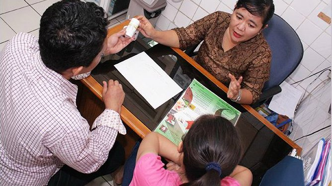

Incredible Solutions To Overpopulation
One of the first measures is to implement policies reflecting social change. Educating the masses helps them understand the need to have one or two children at the most. Similarly, education plays a vital role in understanding the latest technologies that are making huge waves in the world of computing.
Families that are facing a hard life and choose to have four or five children should be discouraged. Family planning and efficient birth control can help in women making their own reproductive choices. Open dialogue on abortion and voluntary sterilization should be seen when talking about overpopulation.
Currently, over 130 million young women and girls around the globe are not enrolled in school. The majority of these live in male-dominated societies, particularly in sub-Saharan Africa and South and West Asia, that does not give women equal right to education as men.
Entrenched gender norms and child marriage further disrupt their access to education. The girl who receives less education is more likely to have children early and vulnerable to exploitation. Moreover, impoverished families are less likely to enroll their female children in school.
As the population of this world is growing at a rapid pace, raising awareness among people regarding family planning and letting them know about serious after-effects of overpopulation can help curb population growth. One of the best ways is to let them know about various safe sex techniques and contraceptive methods available to avoid any unwanted pregnancy.

The government of various countries might have to come up with various policies related to tax exemptions to curb overpopulation. One of them might be to waive a certain part of income tax or lowering rates of income tax for those married couples who have single or two children. As we humans are more inclined towards money, this may produce some positive results.

Imparting sex education to young kids at the elementary level should be a must. Most parents feel shy in discussing such things with their kids that results in their children going out and look out for such information on the internet or discuss it with their peers.
Mostly, the information is incomplete, which results in sexually active teenagers unaware of contraceptives and embarrassed to seek information about the same. It is, therefore, important for parents and teachers to shed their old inhibitions and make their kids or students aware of solid sex education.